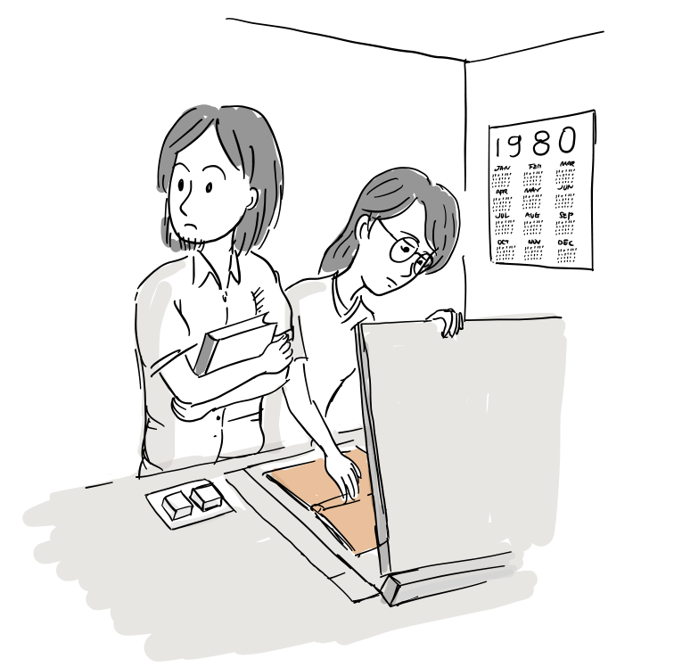

Tools Desk · Databases
PostgreSQL in a single executable: the database is a directory, the kernel is Plan 9, and Docker is nowhere in it
minipg, by Jeff Lindsay, is “PostgreSQL as one executable, ready to use, with no server to configure.” A .pgdb directory is the database — its data, config, credentials and Postgres version all live inside it — and minipg app.pgdb opens a psql shell on it, starting a server only when a command needs one and stopping it when idle. The executable embeds Docker Hub’s postgres:18-alpine image but runs Alpine’s own Postgres binaries directly on the host’s hypervisor through h9, whose “Linux personality” has a Plan 9 kernel answering the system calls: “There’s no Linux kernel to boot, no VM image, and no Docker.”[7]
The rest is furniture you can copy while stopped: the Postgres data directory as plain files, a minipg.toml holding settings and the generated superuser password, dump and restore commands, and a run that sets DATABASE_URL for an application. The browser demo downloads about 35 MB and needs JavaScript Promise Integration, which Chrome and Edge have from version 137. The most newsworthy paragraph is the author’s own warning: on h9’s native backend, Postgres runs “about 2× slower than native for one client, and slower under load. Don’t trust it with data you can’t recreate yet.” The thread, small at 44 comments, ran the comparisons — chiefly against PGlite, the WebAssembly single-binary Postgres: “So this uses virtualization and pglite does not. Seems like pglite is lighter then,” one reader concluded.[8]
Culture Desk · Unix History
Lions’ Commentary on Unix, photocopied in secret for twenty years: how AT&T’s license terms built samizdat for kernel code

John Lions taught operating systems at the University of New South Wales; in May 1976 he prepared lecture notes explaining the kernel source of AT&T’s Unix Version 6, and by 1977 they were circulating among other schools and research institutions with Unix licenses — Bell Labs included, which eventually took over distribution. At USENIX in June 1979, AT&T announced Version 7 license terms restricting courses that disclosed or discussed source code, and distribution of Lions’ book was “tightly controlled” as well. For roughly twenty years before an official edition existed, computer-science students studied the kernel from unauthorized photocopies.[9]
The book reached print because the community kept asking: Peter H. Salus, Dennis Ritchie and Berny Goodheart pressed AT&T, then Novell, then the Santa Cruz Operation for permission, and SCO agreed — Peer-to-Peer Communications published the official edition in 1996, ISBN 1-57398-013-7, foreword by Ritchie. The thread did the house history around it: Plan 9 was already circulating as books with source at the same time; the SCOs were sorted into “Good SCO” (Santa Cruz Operation, which granted the permission) and “Bad SCO” (the later ex-Caldera SCO Group); and one Unix kernel hacker of the era, recalling the book’s most famous line — “You are not expected to understand this,” quoted with a smiley — reported hand-simulating that very code and finding it buggy, fixed in Version 7.[10]
AI Desk · Commerce
Moat sells wholesale AI at Costco prices: $5 a month, 30–70% off list — and the thread’s first question is what “no limits” leaves out

The service bills itself as “the costco of ai”: a $5-a-month membership ($60 billed yearly; $10 monthly, cancel anytime) that pools a “large member base… into hundreds of trillions of tokens” of buying power, listing 105 models at member prices per million tokens, discounted 30 to 70 percent off list — from Z.ai’s GLM-5.3 Flash at $0.045 in and $0.15 out (70% off) to Moonshot’s Kimi K3 at $1.80 and $9.00 (40% off). What the pitch leans on is subtraction: “no 5-hour or no weekly limits,” against a comparison tier priced at $10.[11]
The thread read the fine print before anything else. “When I see a subscription model with ‘no limits,’ my instinct tells me there’s something fishy going on,” one reader wrote — and was answered from below: “You pay per token in addition to the monthly fee.” Another put the model plainly: “It’s not no limits, they’re giving you a discount. Like a ‘costco’ card… there’s lots of discounted token shops selling unused token allocations for 80% off,” with the warning that “selling discounted tokens is probably the most effective honeypot at the moment.” A reader who compared it with her own providers found it “ain’t cheaper”; another, benchmarking DeepSeek usage, went back to the direct API at roughly 50% more cost for consistent performance.[12]